pytransform3d.uncertainty.concat_locally_uncertain_transforms¶
- pytransform3d.uncertainty.concat_locally_uncertain_transforms(mean_A2B, mean_B2C, cov_A, cov_B)[source]¶
Concatenate two independent locally uncertain transformations.
We assume that the two distributions are independent.
Each of the two transformations is locally uncertain (not in the global / world frame), that is, samples are generated through
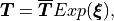
where 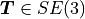 is a sampled transformation matrix, 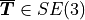 is the mean transformation, and 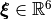 are exponential coordinates of transformations and are distributed according to a Gaussian distribution with zero mean and covariance 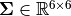, that is, 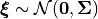.
The concatenation order is the same as in
concat(), that is, the transformation B2C is left-multiplied to A2B. Note that the order of arguments is different fromconcat_globally_uncertain_transforms().Hence, the full model is
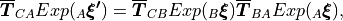
where 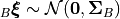, 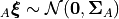, and 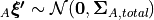.
This version of Meyer et al. approximates the covariance up to 2nd-order terms.
- Parameters:
- mean_A2Barray, shape (4, 4)
Mean of transform from A to B: 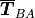.
- mean_B2Carray, shape (4, 4)
Mean of transform from B to C: 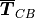.
- cov_Aarray, shape (6, 6)
Covariance of noise in frame A: 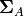. Noise samples are right-multiplied with the mean transform A2B.
- cov_Barray, shape (6, 6)
Covariance of noise in frame B: 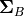. Noise samples are right-multiplied with the mean transform B2C.
- Returns:
- mean_A2Carray, shape (4, 4)
Mean of new pose.
- cov_A_totalarray, shape (6, 6)
Covariance of accumulated noise in frame A.
References
Meyer, Strobl, Triebel: The Probabilistic Robot Kinematics Model and its Application to Sensor Fusion, https://elib.dlr.de/191928/1/202212_ELIB_PAPER_VERSION_with_copyright.pdf